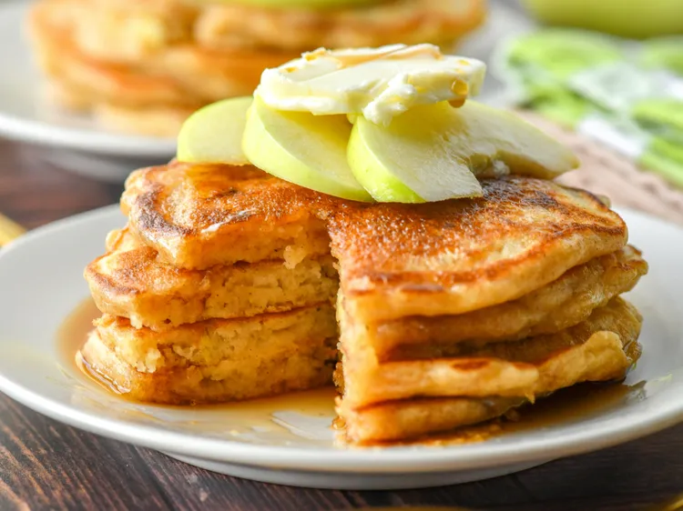
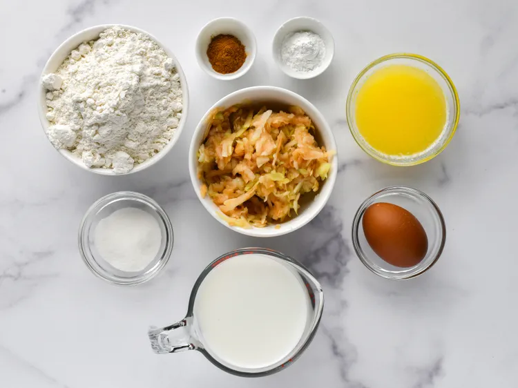
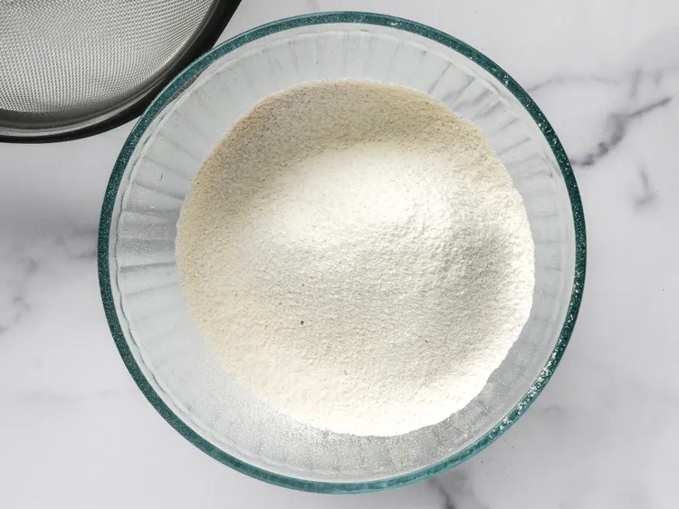
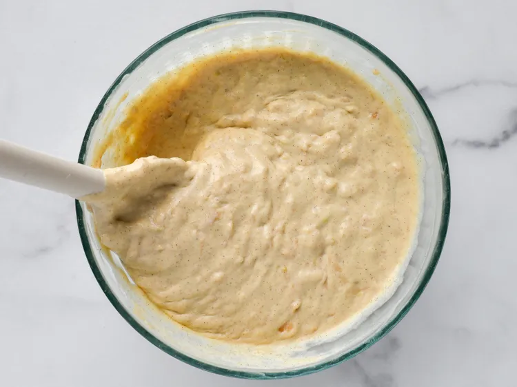
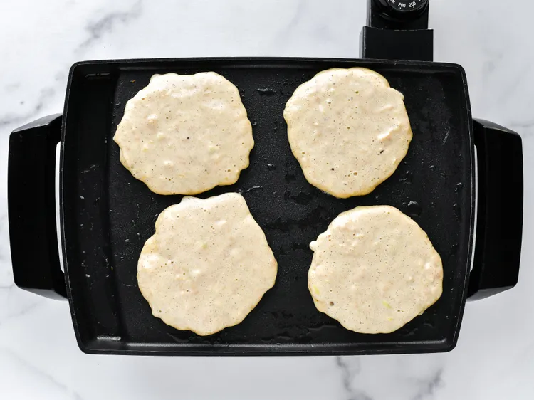
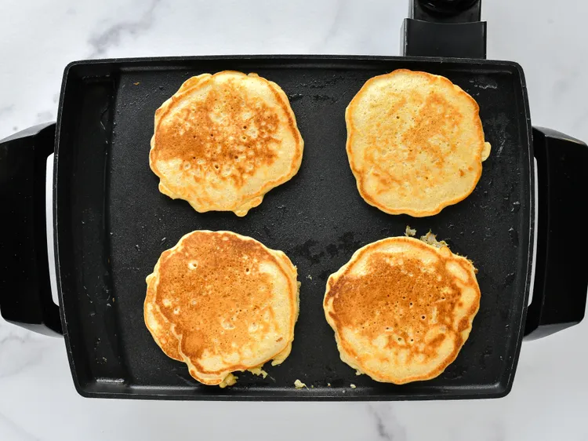
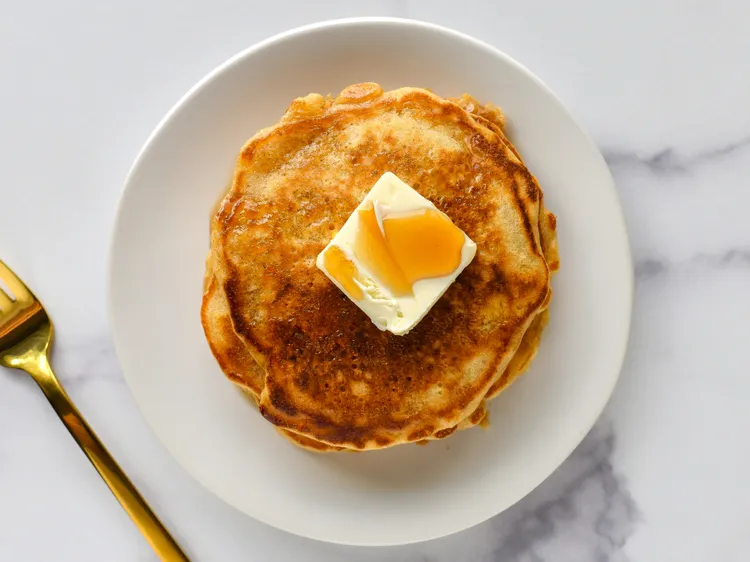

Apple Pancakes
These apple pancakes are perfect for a weekend breakfast or brunch. One batch is never enough for my family! I recommend eating these pancakes with hot cinnamon syrup.

- Prep Time
- 10 mins
- Cook Time
- 20 mins
- Total Time
- 30 mins
- Servings
- 4
Ingredients
- 1 ¼ cups all-purpose flour
- 1 tablespoon white sugar or to taste
- 1 ¼ teaspoons baking powder
- ¼ teaspoon ground cinnamon or to taste
- 1 cup milk or as needed
- ¼ cup butter, melted
- 1 large egg
- 1 cup shredded tart apple
Directions
-
Gather all ingredients.

-
Sift flour, sugar, baking powder, and cinnamon together into a large bowl.

-
Make a well in the center and add milk, melted butter, and egg; mix until smooth. Stir shredded apple into pancake batter until just combined.

-
Heat a lightly oiled griddle or frying pan over medium-high heat. Pour or scoop batter onto the hot griddle, using about 1/4 cup per pancake; cook until bubbles form and the edges are dry, 2 to 3 minutes.

-
Flip and cook until browned on the other side. Repeat with remaining pancake batter.

-
Serve and enjoy!

Nutrition Facts
Per serving:
- Calories
- 322
- Fat
- 14g
- Carbohydrates
- 41g
- Protein
- 8g